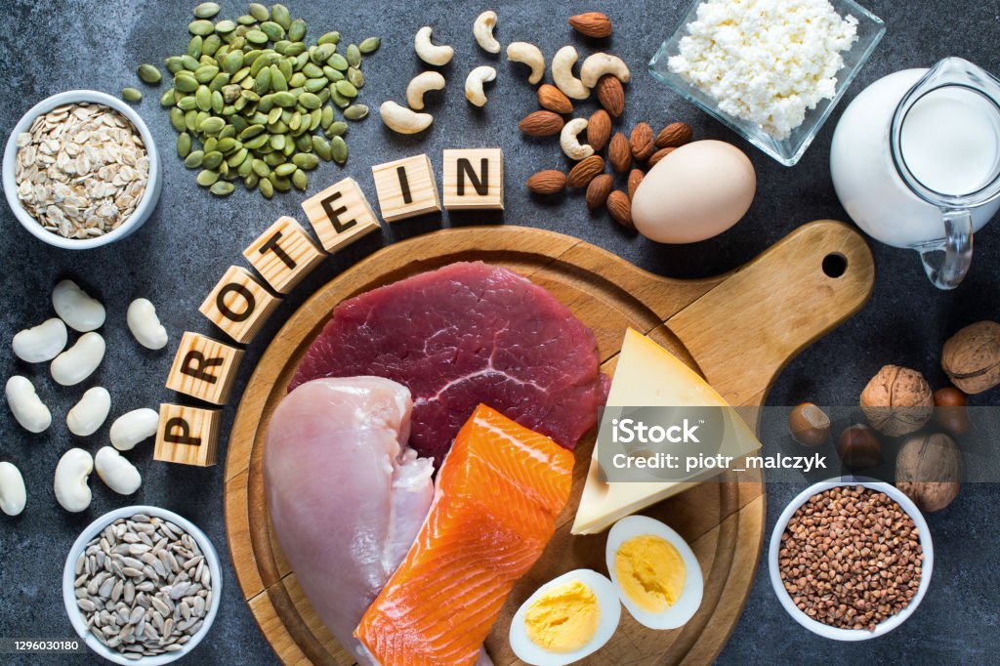

https://www.istockphoto.com/es/foto/composici%C3%B3n-con-alimentos-ricos-en-prote%C3%ADnas-gm1296030180-389575711?searchscope=image%2Cfilm
Macromoléculas formadas por la sucesiva unión de aminoácidos. Hay veinte aminoácidos diferentes en la naturaleza. Ocho de estos, que el hombre no puede sintetizar, se denominan esenciales, y debemos tomarlos en la dieta. El total de los aminoácidos esenciales solo están presentes en las proteínas de origen animal. La proporción de aminoácidos presentes en las proteínas de cada especie de ser vivo son diferentes. Cuanto más cerca en la escala evolutiva se encuentren dos individuos más similitudes existen en su proporción de aminoácidos. La calidad biológica de una proteína será mayor cuanto más similar sea su composición a la de las proteínas de nuestro cuerpo. Por ello, desde el punto de vista nutricional, las proteínas de origen animal (carne, leche, huevos) son de mejor calidad o mayor valor biológico que las de origen vegetal, ya que estas últimas son deficitarias en algún aminoácido. Aunque al combinar determinados alimentos vegetales (como legumbres y arroz) se consigue un aporte de aminoácidos adecuado.
Ejercen las siguientes funciones en nuestro organismo:
- Estructural: forma parte de las fibras musculares.
- Reguladora: enzimas y hormonas.
- Energética: por cada gramo de proteína que ingerimos obtenemos 4 kcal.